269 — Ruta Cloud Security Engineer
Parte: 22 — Especializaciones, certificaciones y práctica profesional
Nivel: intermedio-avanzado · Horas estimadas: 4
Laboratorio: decision · Estado: EXECUTABLE_CORE
🎯 Propósito
La ruta de seguridad en la nube: conseguir que un fallo no sea catastrófico y que un ataque no sea rentable. La clase separa esta especialidad del cumplimiento normativo, da las competencias que se miden —modelado de amenazas, identidad, detección y respuesta—, y marca su modo de fracaso, que es el más caro de todos: convertirse en el equipo del no, al que se rodea.
📚 Resultados de aprendizaje
Al finalizar podrás:
- Distinguir seguridad de cumplimiento y saber para qué sirve cada uno.
- Modelar amenazas de forma que produzca decisiones, no documentos.
- Priorizar por explotabilidad e impacto, no por gravedad nominal.
- Evitar el modo de fracaso del equipo al que se rodea.
- Reconocer el techo de la ruta y qué la continúa.
🧩 Conceptos centrales
| Concepto | Comprensión verificable |
|---|---|
modelado de amenazas |
Ejercicio de preguntar qué puede salir mal, quién lo querría y qué lo impediría. Produce decisiones, no documentos. |
radio de explosión |
Hasta dónde llega el daño si una parte cae. La variable que esta ruta reduce. |
explotabilidad |
Si la vulnerabilidad es alcanzable y aprovechable en este sistema concreto. Domina sobre la gravedad nominal. |
camino pavimentado seguro |
Hacer que lo seguro sea lo fácil. La alternativa a la norma que hay que recordar. |
cumplimiento |
Demostrar ante un tercero que se hace lo que se dice. Necesario, y distinto de estar seguro. |
equipo del no |
Modo de fracaso en que seguridad bloquea sin alternativa y los equipos aprenden a esquivarla. |
🧠 Modelo mental
Una especialización combina fundamentos, evidencia de proyectos y juicio bajo restricciones; una insignia sin práctica no sustituye esa combinación.
Aplicado a esta clase, separa siempre cuatro planos: intención (qué necesita el usuario), configuración (qué declaramos), estado observado (qué existe de verdad) y evidencia (cómo sabemos que cumple). Confundirlos produce diseños que se ven correctos en un diagrama pero fallan al operar.
🗺️ Flujo de razonamiento

📖 Desarrollo
1. Seguridad no es cumplimiento
Los dos son necesarios y se confunden constantemente, con consecuencias caras en las dos direcciones.
SEGURIDAD
reducir la probabilidad y el impacto de que alguien
haga algo que no debería
→ se mide por lo que pasa cuando se intenta
CUMPLIMIENTO
demostrar ante un tercero que se hace lo que se dice
→ se mide por evidencia auditable
→ un sistema puede cumplir y ser inseguro
→ y puede ser seguro y no poder demostrarlo
→ y el error caro es dejar que el calendario de auditoría
fije las prioridades de seguridad
Y lo que esta ruta hace de verdad, en tres verbos:
PREVENIR
identidad y privilegio mínimo clase 231
aislamiento de red y de cuentas clases 219, 231
cifrado y gestión de claves clase 197
cadena de suministro: firma y procedencia clase 216
y valores por defecto seguros ley 26
DETECTAR
registro completo e inalterable
señales de comportamiento anómalo
y tiempo hasta detectar, medido
RESPONDER
contener, erradicar, recuperar
con procedimientos ejecutables clase 259
y ensayados clase 261
→ y la mayoría de los equipos gastan casi todo en
prevenir
→ y la diferencia entre un incidente y una catástrofe la
hacen los otros dos
Y la variable que resume la ruta:
EL RADIO DE EXPLOSIÓN
«si esta credencial se filtra, ¿hasta dónde llega?»
«si este servicio se compromete, ¿qué puede tocar?»
«si esta cuenta cae, ¿qué otras caen con ella?»
→ y casi todo el trabajo técnico de la ruta es reducirlo
cuentas separadas por entorno clase 219
permisos por propósito clase 231
credenciales temporales clase 256
copias que sobreviven al administrador clase 255
y segmentación de red clase 194
→ porque asumir que nada fallará no es una estrategia
2. Modelado de amenazas que produce decisiones
El modelado de amenazas tiene mala fama porque suele producir documentos. Hecho bien, produce cambios concretos.
LAS CUATRO PREGUNTAS
1 ¿qué estamos construyendo?
→ un diagrama con los límites de confianza
→ y lo que no está en el diagrama no se analiza
ley 24
2 ¿qué puede salir mal?
→ por cada flujo que cruza un límite
3 ¿qué vamos a hacer?
→ mitigar, aceptar, transferir o eliminar
4 ¿lo hicimos bien?
→ y esta cuarta es la que casi siempre falta
→ una sesión de 90 minutos con las personas que lo
construyen
→ y sale con acciones, dueño y plazo, o no sirvió
Y dónde mirar, por rendimiento:
LOS LÍMITES DE CONFIANZA, que es donde está casi todo
entrada de usuario a sistema
servicio a servicio clase 231
sistema a proveedor externo clase 188
plano de control a plano de datos
y persona a sistema clase 256
Y LAS PREGUNTAS QUE MÁS DESCUBREN
«¿qué pasa si este componente miente?»
«¿qué puede hacer esta identidad que no necesita?»
«¿quién puede borrar las copias?» clase 255
«¿quién puede desactivar el registro?»
«¿qué credencial hay aquí que no caduca?»
y «si esto se compromete, ¿cómo nos enteraríamos?»
→ la última suele no tener respuesta
→ y esa ausencia es el hallazgo más valioso de la sesión
Y el criterio de prioridad, que corrige el error más común:
NO SE PRIORIZA POR GRAVEDAD NOMINAL
una vulnerabilidad «crítica» en una biblioteca que el
código nunca invoca, sin exposición externa, es menos
urgente que una «media» en el borde
SE PRIORIZA POR
¿es alcanzable desde fuera?
¿está en el camino de ejecución?
¿hay explotación conocida en circulación?
¿qué radio de explosión tiene si se aprovecha?
¿y qué compensaciones existen ya?
→ y esto es lo que convierte 3.000 hallazgos en 40
acciones clase 216
→ y una lista de 3.000 no se arregla: se ignora
3. El modo de fracaso: el equipo del no
Es el modo de fracaso más caro de todas las rutas, porque su resultado no es lentitud: es que la seguridad deja de existir donde importa.
CÓMO EMPIEZA
seguridad bloquea algo con razón
→ y sin ofrecer alternativa
el equipo necesita entregar
→ y encuentra otro camino
QUÉ PRODUCE
el trabajo se hace igual, fuera del alcance de seguridad
→ cuentas personales, servicios sin registrar,
credenciales en repositorios privados
seguridad deja de saber qué existe
→ y pierde la única cosa que necesitaba: visibilidad
y se entera de los sistemas cuando fallan
→ es la ley 16 en su forma más costosa
→ y el daño no es que se salte una norma: es que el
sistema real se vuelve invisible
Y cómo se sale, que define el nivel 4 de esta ruta:
1 NUNCA BLOQUEAR SIN ALTERNATIVA
«no puedes usar eso» → «usa esto, que ya está listo»
→ y si no hay alternativa, el trabajo de seguridad es
construirla, no prohibir
2 CAMINO PAVIMENTADO SEGURO
la plantilla ya trae permisos mínimos, cifrado,
registro y secretos gestionados clase 267
→ y entonces lo seguro es lo fácil
→ y la norma escrita deja de ser necesaria
3 POLÍTICAS EN MODO AVISO ANTES DE BLOQUEAR
clase 217
→ se mide el impacto antes de imponerlo
4 Y AMNISTÍA PARA LO QUE APAREZCA
«cuéntanos qué tienes fuera y te ayudamos a traerlo,
sin consecuencias»
→ recupera visibilidad, que es lo que se había perdido
Y el segundo modo de fracaso, el del teatro:
SEGURIDAD DE INFORME
paneles llenos, informes mensuales, cientos de reglas
→ y ningún ensayo de respuesta clase 261
→ y nadie ha comprobado si la detección funciona
la prueba
haz algo que DEBERÍA detectarse y cronometra
→ crear una clave de acceso permanente
→ dar permisos amplios a un rol
→ exfiltrar un fichero grande a un destino externo
→ y si nadie lo detecta, las reglas son decoración
→ este ejercicio, hecho una vez, reordena las
prioridades del año
4. Niveles, evidencia y techo
Lo que se mide en esta ruta, por nivel.
NIVEL 2 · RESUELVO
configura identidad, red y cifrado correctamente
revisa permisos y encuentra los excesivos
gestiona secretos y su rotación clase 197
responde a un incidente siguiendo el procedimiento
y prioriza vulnerabilidades por explotabilidad
NIVEL 3 · DISEÑO
modela amenazas y produce decisiones
diseña el aislamiento y el radio de explosión
monta detección que se ha comprobado que detecta
dirige un incidente de seguridad, con su comunicación
y negocia riesgo aceptado, por escrito y con dueño
NIVEL 4 · CAMBIO EL SISTEMA
lo seguro es lo fácil, y la adopción se mide
los equipos llaman a seguridad ANTES de construir
→ y esa es la señal definitiva de que la ruta funciona
y el riesgo aceptado es una decisión de negocio
registrada, no un silencio
Y la evidencia que vale:
LO QUE NO VALE
«implantamos la herramienta X»
«pasamos la auditoría»
→ describe actividad, no efecto
LO QUE VALE
«el tiempo hasta detectar una credencial expuesta pasó
de 9 días a 40 minutos, y así lo probamos»
«eliminamos 41 claves permanentes y el acceso pasó a
sesiones temporales auditadas»
«de 3.000 hallazgos, 40 eran alcanzables; los cerramos
en 6 semanas y el resto se documentó con su motivo»
«un servicio comprometido ya no puede tocar producción
porque están en cuentas distintas»
→ efecto, mecanismo y cifra clase 275
Y el techo:
EL TECHO
los controles funcionan, la detección detecta y los
equipos consultan antes de construir
→ y lo que limita entonces es el riesgo que la
organización acepta, que es una decisión de
dirección
continuaciones
a ARQUITECTURA clase 272
si el límite es cómo está construido el sistema
b GOBIERNO Y RIESGO
si el límite es cómo se decide qué se acepta
c o dirección de seguridad
donde el trabajo es presupuesto, personas y
prioridades
Y la lista de comprobación de la clase:
☐ distingo seguridad de cumplimiento y no dejo que la
auditoría fije las prioridades
☐ hay inversión en detectar y responder, no solo en
prevenir
☐ sé el radio de explosión de mis credenciales y cuentas
☐ el modelado de amenazas sale con acciones y dueño
☐ sé responder a «si esto se compromete, ¿cómo nos
enteraríamos?»
☐ priorizo por explotabilidad, no por gravedad nominal
☐ nunca bloqueo sin ofrecer alternativa
☐ existe camino pavimentado seguro y mido su adopción
☐ las políticas pasan por modo aviso antes de bloquear
☐ he comprobado que la detección detecta, cronometrando
☐ el riesgo aceptado está escrito, con dueño y vigencia
☐ los equipos me llaman antes de construir, no después
Y el cierre que enlaza con la clase siguiente: seguridad responde de que el fallo no sea catastrófico; queda quien responde de que el gasto sea una decisión y no una consecuencia. La ruta de gestión económica de la nube es la materia de la clase 270.
🔬 Ejemplo trabajado
La función de seguridad de CloudShop, dos años. Lo que sigue es la prueba que descubrió que la detección no detectaba, la lista de 3.100 hallazgos convertida en 47 acciones, y la amnistía que reveló lo que se había construido fuera.
Prueba 1 · ¿Detecta la detección?
ejercicio anunciado a dirección, no al equipo de guardia
cinco acciones que deberían detectarse, cronometradas
acción detectada tiempo
crear una clave de acceso
permanente no -
dar permiso administrativo a un rol
de servicio sí 4 min
desactivar el registro de auditoría
en una cuenta no -
copiar 2 GB a un destino externo no -
acceder a la base de producción
desde una IP nueva sí 31 min
detectadas 2 de 5
Y lo que se descubrió al investigar por qué:
la regla de «clave permanente creada» existía
→ enviaba a un canal retirado hacía 7 meses
ley 15
la de «registro desactivado» existía
→ y solo cubría 2 de las 9 cuentas clase 219
la de exfiltración
→ nunca se había escrito; se daba por cubierta por otra
→ tres de cinco fallos eran de configuración, no de
capacidad
→ el ejercicio costó 4 horas y reordenó el plan del año
Y lo que se hizo:
cobertura de reglas verificada por cuenta y por región
cada regla con una PRUEBA que la dispara, ejecutada
mensualmente clase 261
→ y si la prueba no dispara la alerta, la regla está
rota
reejecución del ejercicio a los 5 meses
detectadas 5 de 5
tiempo máximo 6 minutos
Prueba 2 · De 3.100 hallazgos a 47 acciones.
el escáner producía 3.100
críticos 287
altos 941
y llevaba 14 meses sin que nadie lo mirara
→ porque una lista de 3.100 no se arregla: se ignora
Y el filtro que se aplicó, por orden:
```text quedan 3.100 todos los hallazgos 1.412 en componentes que llegan a producción 610 en el camino de ejecución del código 188 alcanzables desde fuera o desde entrada de usuario 94 sin compensación existente 47 con explotación conocida en circulación o con radio de explosión alto
→ 47 acciones, cerradas en 6 semanas → y de los 287 «críticos» originales, 19 quedaron en la lista final → y 3 de los 47 eran de gravedad «media»
Y lo que se hizo con los 3.053 restantes:
```text
se documentaron por lote, con el motivo
«no alcanzable: componente no desplegado»
«no en camino de ejecución»
«compensado por segmentación de red»
y se automatizó el filtro
→ el informe semanal pasó de 3.100 líneas a entre 4 y
12 acciones
→ y esas sí se atendían
tiempo medio de cierre de un hallazgo alcanzable
antes no medible (nadie miraba)
después 9 días
Prueba 3 · La amnistía.
situación
seguridad había bloqueado, en 18 meses
uso de una base gestionada concreta
despliegue directo desde portátiles
y tres servicios de terceros
sin ofrecer alternativa en ninguno de los tres casos
la amnistía
«cuéntanos qué tienes funcionando fuera del alcance;
te ayudamos a traerlo; sin consecuencias; 4 semanas»
lo que apareció
cuentas de nube personales con carga real 6
servicios de terceros contratados con tarjeta
de empresa 11
repositorios privados con credenciales 4
una base de datos con datos de clientes en una
cuenta no inventariada 1
y un servicio expuesto a internet sin cortafuegos 1
Y la lectura:
los seis primeros casos existían porque la alternativa
oficial tardaba semanas
→ y el bloqueo no impidió el trabajo: lo hizo invisible
y el caso de la base con datos de clientes
→ llevaba 11 meses
→ sin copias, sin registro, sin cifrado en reposo
→ y era exactamente el riesgo que la norma bloqueada
pretendía evitar
→ el bloqueo produjo el riesgo que quería evitar
→ ley 16, en su versión más cara
Y lo que se cambió:
camino pavimentado seguro clase 267
plantilla con permisos mínimos, cifrado, registro y
secretos gestionados, lista para usar
tiempo desde la petición hasta tener entorno
3 semanas → 4 horas
y la regla de trabajo del equipo
«no se bloquea nada sin alternativa disponible el mismo
día»
resultado a los 12 meses
recursos fuera del inventario detectados 1.107 → 12
peticiones de excepción 34 → 6
y equipos que consultan a seguridad ANTES de
construir 2 → 11
Las cifras a los dos años.
```text antes después DETECCIÓN acciones de prueba detectadas 2 de 5 5 de 5 tiempo máximo hasta detectar n/d 6 min reglas con prueba de disparo mensual 0 41 cobertura de registro por cuenta 2 de 9 9 de 9
PREVENCIÓN claves de acceso permanentes 41 0 roles con permisos administrativos 23 4 cuentas con separación por entorno no sí copias que sobreviven al administrador no sí
GESTIÓN hallazgos en el informe semanal 3.100 4-12 tiempo de cierre de hallazgo alcanzable n/d 9 días riesgos aceptados con dueño y vigencia 0 14
RELACIÓN CON LOS EQUIPOS recursos fuera del inventario 1.107 12 equipos que consultan antes de construir 2 11 peticiones de excepción 34 6
Y el dato que la persona responsable puso primero:
```text
equipos que consultan a seguridad ANTES de construir
2 → 11 de 14
→ y esa es la única métrica que no se puede falsear
→ nadie consulta voluntariamente al equipo del no
La lección que esta clase deja: la detección estaba montada y detectaba 2 de 5 acciones que debía detectar, y tres de los tres fallos eran de configuración —un canal retirado, dos cuentas de nueve cubiertas, una regla que nunca se escribió—, no de capacidad. Y el bloqueo sin alternativa produjo exactamente el riesgo que pretendía evitar: una base con datos de clientes, once meses sin copias, sin registro y sin cifrado, en una cuenta que nadie sabía que existía.
🧪 Laboratorio guiado
Ejecuta desde la raíz:
python classes/part-22-specializations-certifications-career/269-ruta-cloud-security-engineer/lab.py
El laboratorio selecciona el motor de práctica decision y produce
lab_result.json. El escenario, sus comprobaciones y el artefacto esperado corresponden a
esta clase; no requiere credenciales y deja explícito qué debe revalidarse en un sandbox real.
- Lee
exercise.stepsy formula una predicción antes de ejecutar. - Ejecuta la práctica y verifica todos los elementos de
checks. - Provoca el caso de
negative_testy explica la señal observada. - Materializa
security-engineer-planenevidence/usando la plantilla indicada. - Para proveedor real, sigue
sandbox.requires, registra costo y ejecutadestroy.
Evidencia esperada
El artefacto principal es una matriz de decisión ponderada y un ADR. Además, la entrega debe incluir el comando ejecutado, la salida estructurada y una conclusión que no exceda lo observado.
🏆 Reto verificable
Construye security-engineer-plan para el caso CloudShop. Incluye una alternativa descartada,
un supuesto que pueda falsarse, una prueba de fallo y una decisión de rollback.
✅ Criterio de aceptación
- [ ]
lab.pytermina con código 0 y genera JSON válido. - [ ] La entrega conecta al menos tres requisitos con mecanismos verificables.
- [ ] Existe una prueba positiva y una prueba negativa con evidencia.
- [ ] Seguridad, costo y operación aparecen como decisiones, no como anexos.
- [ ] Se declara una limitación y una condición que obligaría a revisar el diseño.
- [ ] Otra persona puede repetir el recorrido sin conocimiento tácito.
⚠️ Errores frecuentes
| Síntoma | Causa probable | Corrección |
|---|---|---|
| Se pasa la auditoría y aun así ocurre una brecha | El calendario de cumplimiento fijó las prioridades de seguridad | Separa las dos funciones: cumplimiento demuestra ante terceros, seguridad reduce probabilidad e impacto; prioriza por radio de explosión. |
| Hay miles de hallazgos y no se arregla ninguno | Se prioriza por gravedad nominal en vez de por explotabilidad | Filtra por alcanzable, en camino de ejecución, con explotación conocida y radio de explosión; documenta el resto por lote con su motivo. |
| Aparecen sistemas que nadie sabía que existían | Se bloqueó sin ofrecer alternativa y el trabajo se hizo fuera del alcance | No bloquees sin alternativa disponible, monta el camino pavimentado seguro y ofrece amnistía para recuperar visibilidad. |
| Las reglas de detección existen y no detectan | Nadie ha comprobado si disparan: canales retirados, cobertura parcial, reglas que nunca se escribieron | Ejecuta acciones que deberían detectarse y cronometra; cada regla necesita una prueba de disparo periódica. |
| El modelado de amenazas produce documentos y ningún cambio | Falta la cuarta pregunta y no salen acciones con dueño y plazo | Cierra la sesión con acciones asignadas y revisa después si se hicieron; y pregunta siempre cómo os enteraríais si eso se comprometiera. |
| Seguridad se entera de los proyectos cuando ya están en producción | Consultar es caro y bloquea, así que se evita | Mide cuántos equipos consultan antes de construir; si no crece, el problema es tu proceso, no su disciplina. |
🛡️ Seguridad, ética y costo
Trabaja con cuentas propias o sandboxes autorizados. No publiques secretos, identificadores reales ni datos personales. Antes de crear recursos pagos define presupuesto, etiquetas y comando de destrucción; después verifica que no queden recursos huérfanos. Los ejemplos locales enseñan contratos, pero no certifican cumplimiento ni disponibilidad de producción.
❓ Preguntas de comprobación
- ¿En qué se diferencian seguridad y cumplimiento y qué error produce confundirlos?
- ¿Qué es el radio de explosión y qué medidas lo reducen?
- ¿Qué criterio convierte miles de hallazgos en unas pocas acciones?
- ¿Cómo empieza el modo de fracaso del equipo del no y qué produce?
- ¿Cómo se comprueba que la detección detecta?
🔗 Referencias
- Shostack, A. (2014). Threat Modeling: designing for security. https://shostack.org/books/threat-modeling-book
- NIST (2018). Cybersecurity Framework — identificar, proteger, detectar, responder, recuperar. https://www.nist.gov/cyberframework
- AWS (2024). Security Pillar, Well-Architected Framework. https://docs.aws.amazon.com/wellarchitected/latest/security-pillar/welcome.html
- Microsoft (2024). Azure security best practices and patterns. https://learn.microsoft.com/azure/security/fundamentals/best-practices-and-patterns
- Google Cloud (2024). Security foundations blueprint. https://cloud.google.com/architecture/security-foundations
- Documentación oficial vigente del servicio implementado; registra URL y fecha de consulta.
📥 Descargar: Parte 22 en PDF · Manual integral